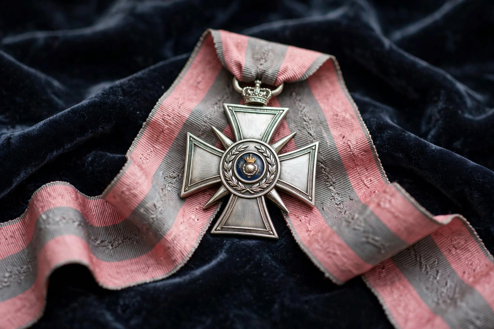

Order of the British Empire
| Order of the British Empire | |
| Type | Order of chivalry |
|---|---|
| Established | 4 June 1917, by King George V |
| Motto | "For God and the Empire" |
| Awarded for | Meritorious service to the Crown and nation |
| Grades | GBE, KBE/DBE, CBE, OBE, MBE |
| Sovereign | The British monarch |

The Most Excellent Order of the British Empire is a British order of chivalry, rewarding contributions to the arts and sciences, work with charitable and welfare organisations, and public service outside the civil service. It was established on 4 June 1917 by King George V, and comprises five classes across civil and military divisions.
Grades
The grades in descending order are: Knight/Dame Grand Cross (GBE), Knight/Dame Commander (KBE/DBE), Commander (CBE), Officer (OBE) and Member (MBE). The two senior grades entitle the holder to the title Sir or Dame. Most appointments are made on the advice of governments of the United Kingdom and some Commonwealth realms, and announced in the New Year Honours and the Sovereign's Birthday Honours.
Insignia and chapel
The order's badge is a cross pattée bearing a medallion of Britannia; its riband is rose-pink with pearl-grey edges (military divisions add a grey central stripe). The chapel of the order is in the crypt of St Paul's Cathedral, London. The British Empire Medal (BEM), affiliated with the order since 2012 in the UK, recognises meritorious local voluntary service.
Criticism
The word "Empire" in the title has been criticised as a celebration of colonialism, and some nominees — including the poet Benjamin Zephaniah — have publicly declined appointments on that ground; proposals to rename the order have been debated but not adopted.